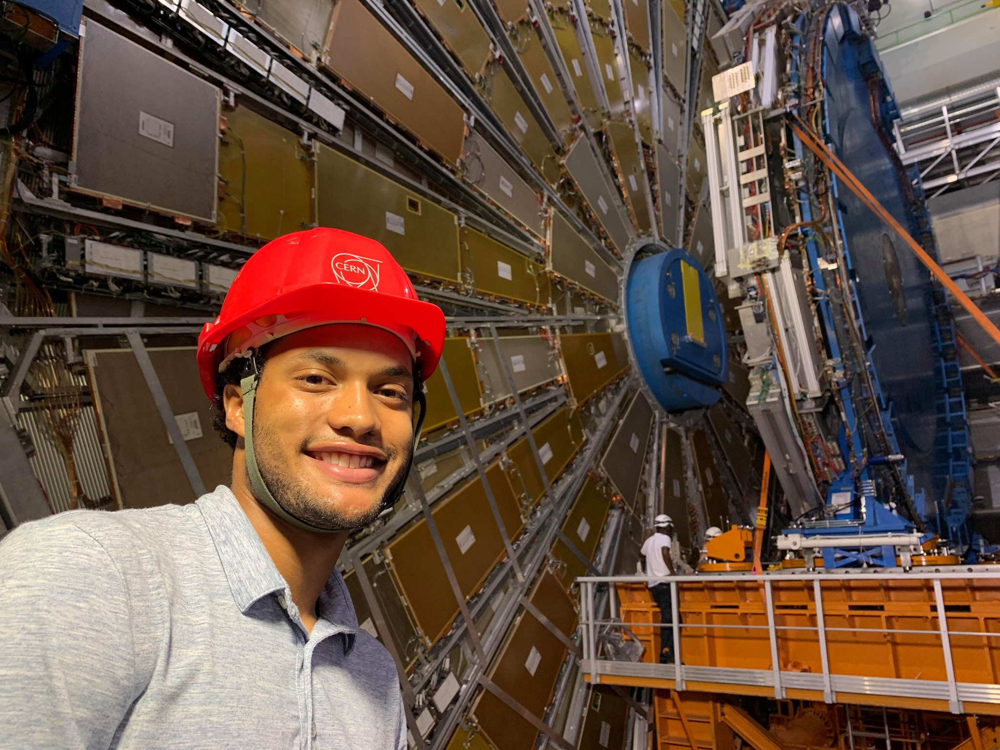

Experience
Work & Research
Backend systems, distributed platforms, and research-driven engineering.
Senior Software Engineer with experience in distributed systems,
event-driven architecture, and API platforms. Previously at
McMaster-Carr; now at Arrive Logistics.
Professional Experience
Mar 2026 – Present
Senior Software Engineer — Arrive Logistics
-
Building platform engineering solutions for freight logistics
operations at one of the fastest-growing freight brokerages
in the U.S.
-
Designing and delivering backend services and APIs that support
core business workflows.
Mar 2023 – Mar 2026
Senior Software Engineer — McMaster-Carr
-
Designed and delivered scalable REST APIs supporting critical
business workflows and platform services.
-
Architected C#/.NET distributed services and Kafka-based event
pipelines, reducing update latency from days to seconds.
-
Established logging, observability, and Kafka standards to
support long-term maintainability.
Initiative · Mar 2025 – Jun 2025
Tech Training Leader — LLM Prompt Library
- Led a 7-person cohort through data modeling, API design, and integration into a .NET + React application.
- Architected versioned prompt configurations with variables, assistant messages, and model parameters.
Sep 2021 – Mar 2023
Software Engineer 2 — McMaster-Carr
-
Built RESTful APIs and microservices using C#, React, and
MongoDB to support internal web applications.
-
Re-architected legacy workflows into a centralized system,
retiring 50,000 spreadsheets.
-
Applied object-oriented design to reduce duplication and
improve code clarity.
Education
2023 – 2026
M.S. Computer Science — University of Chicago
- Focus on distributed systems, algorithms, and big data.
2017 – 2021
B.S. Mechanical Engineering — Harvard College
- Competed in track & field.
-
Senior capstone at the Wyss Institute — designed an actuated
tail for the HAMR microrobot.
Harvard SEAS spotlight →
Research
Aug 2020 – May 2021
Senior Design Capstone — Wyss Lab, Harvard
- Designed and tested an actuated tail for the quadrupedal microrobot HAMR.
- Built state space models in MATLAB to simulate gait behavior on uneven terrain.
Jun 2019 – Aug 2019
CERN ATLAS Experiment — Harvard ATLAS Team
-
Developed Python simulations using ROOT to model detector
performance for the ATLAS New Small Wheel.
- Designed and tested detector prototypes, presenting findings to senior research teams.

Selected materials:
slides,
phi distribution,
theta distribution,
simulation script.
Resume
Download or preview below.